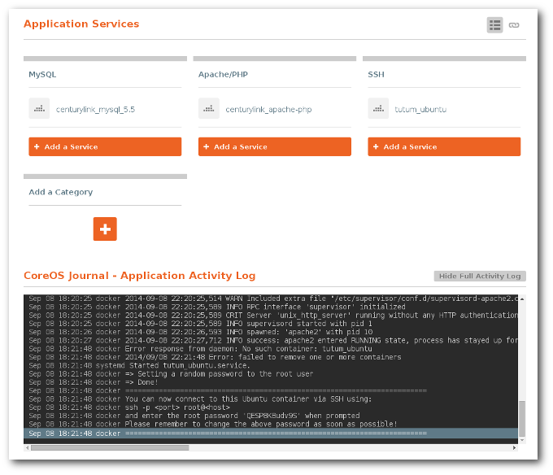
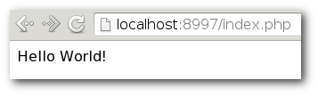

Dave Parrish's Blog
Dave Parrish's Blog
Panamax PHP/MySQL with SSH HOWTO
Panamax logo
Intoduction
Over the course of this year I have been getting more and more into Docker. I’ve experimented with creating my own Docker containers and I now use Docker to host some of my client websites. I really enjoyed the simplicity of creating a Docker which would only run one dedicated process, but I had a lot of trouble wrapping my mind around running several processes which would work together. As a web developer, I often need to run at least a webserver process and a database process. Ideally, I wanted to be able to run the containers locally, on my computer, and have them run nearly exactly the same on my web server.
While trying to find a sane solution to running more than one container which is easily deployable, I came across Fig. Fig is great but it requires creating a fig.yml file manually and there is no collection of Fig configurations. I’m happy to say Panamax addresses both of these issues. Like Fig, Panamax is a platform to orchestrating Docker containers. Panamax does not require any manual editing of files and allows for finding and configuring several Docker containers through a point and click web interface.
As good fortune would have it, I was able to try out Panamax and enter their template contest! This blog post explains what my entry is, how to set it up and how it is intended to work. I hope this can be a starting point to exploring Panamax and Docker ecosystem.
Purpose
The PHP/MySQL with SSH template that I built for the Panamax contest is intended to be used as an example of how a development environment could be created with Panamax. Out of the box this template will allow you to create a PHP website which is served by Apache and can connect to a MySQL backend. The developer can create and modify their source code by connecting through SSH.
Using a similar pattern, development environments could be made for many other technology stacks such as Ruby on Rails, Node.js, Django, etc..
Prerequisites
The Panamax requirements are described here. For the most part, all you should need to install is VirtualBox and Vagrant locally. Because Panamax uses VirtualBox, it pretty much makes development compatible across OS X, Windows and Linux.
Install
Panamax installing
Before getting started with the template, first install and run Panamax.
- You will need to use the install instructions for your operating system located here.
- After installing, I usually run
panamax infoto see if everything is up-to-date. - In your case Panamax will probably say
The panamax-vm does not exist. Please run ($ panamax init) to install Panamax., so install the VM now with the commandpanamax init. - Now you should be able to visit the Panamax web interface by going to
http://localhost:8888in your web browser.
Run the template
Now you are ready to start running templates! But we first need to find the LAMP template. This is easy, just search for “PHP”, “LAMP” and/or “SSH” and a template named “LAMP stack with SSH” should show. You can click “More Details” to see what this template is all about or go ahead and click “Run Template >” when you are ready to download and run the LAMP stack.
Panamax template search
When you click “Run Template >” all of the Docker containers and configuration will be stored on your Panamax VM.
Port Forward
Because Panamax is actually running as a VM, the only way we can access services running on that VM as if they were running on our host machine is if we forward those ports in VirtualBox. I believe you could access the IP of the VM directly, but I haven’t tried to get that to work. For this howto, I’m just going to forward the ports, which isn’t very difficult.
To forward the ports to your localhost you’ll need to run the following commands.
VBoxManage controlvm panamax-vm natpf1 rule1,tcp,,22222,,22222
VBoxManage controlvm panamax-vm natpf1 rule2,tcp,,8997,,8081We will be using the port ‘22222’ to access SSH and port ‘8081’ to access the PHP website.
Connect via SSH
In order to do anything with this template, you’ll need to connect via SSH.
Get SSH
Several SSH clients exist. I’m using OpenSSH on Linux, which should be very similar for OS X. For Windows, you’ll probably want to download Putty.
Password
Once the template had downloaded and run all of the containers, the “CoreOS Journal - Application Activity Log” should show a password which you’ll need to log into SSH. Copy that password. It should appear something like this in the log.
Sep 08 18:21:48 docker ========================================================================
Sep 08 18:21:48 docker You can now connect to this Ubuntu container via SSH using:
Sep 08 18:21:48 docker ssh -p <port> root@<host>
Sep 08 18:21:48 docker and enter the root password 'QESP8KBudv9S' when prompted
Sep 08 18:21:48 docker Please remember to change the above password as soon as possible!
Sep 08 18:21:48 docker ========================================================================So, in my case, the password is ‘QESP8KBudv9S’.
Here is a screenshot showing where the log can be found. 
Connect
Now all you need to do is connect using ssh. For my case I would run the command ssh -p 22222 root@localhost. Notice that we are using the SSH port “22222” which we forwarded to connect to our SSH service.
Develop
You’ve done all of the setup work. Now you can begin creating your PHP website!
PHP
The template is configured to use the /app directory as the root directory for the website. So, let’s test that PHP is working by creating a ‘Hello World’ PHP file.
In your SSH session run the command echo '<?php echo "Hello World!"; ?>' > /app/index.php
Now go to the URL http://localhost:8997/index.php in your web browser. If everything is working correctly then you should see ‘Hello World’. 
In order to edit the file you could use nano /app/index.php or vi /app/index.php but you’ll probably want to use an editor on your host system and sync the files through SSH using FileZilla, a bash script using rsync or something like that.
MySQL
In order to test that the MySQL service is running, we can connect to MySQL from our SSH session. In order to do this, we first need to install MySQL client and then connect. Run the following commands to do both.
apt-get update && apt-get install -y mysql-client
mysql -h mysql(It would have been better for me to create a container with MySQL client already installed on the SSH container, but I didn’t have time due to contest deadlines.)
(An additional feature would be to run a service for running PHPMyAdmin so that the developer could access the MySQL database from a web interface.)
Here is a script to test that PHP can connect to MySQL using this template.
<?php
// Open connection to MySQL.
$mysqli = new mysqli('mysql', 'root', '', '');
// Print databases.
$res = $mysqli->query('SHOW DATABASES;');
echo '<b>Databases available:</b><br />';
while ($row = $res->fetch_array())
{
echo ($row['Database'] . '<br />');
}
$mysqli->close();
?>Alt text
Conclusion
By now you should have a good idea of what is possible with this template. I encourage you to modify the template to meet your needs. Panamax provides a wide range of possibilities. This template only scratches the surface.
Enjoy!
Modifed: 2014-09-09 18:10:10